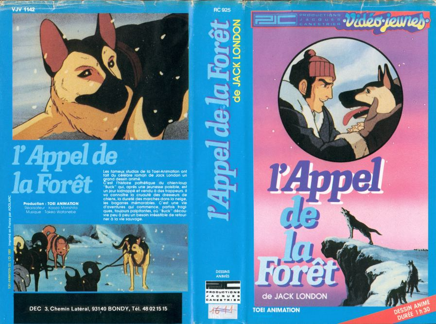

Dans les braderies, les foires aux puces, les brocantes, on trouve souvent de tout et de l’inattendu. C’est ainsi que j’ai pu devenir l’heureux possesseur d’une vingtaine de 45 tours contenant les génériques de notre enfance, de la figurine du chevalier du cancer quasiment complète (10F qui dit mieux), et aussi d’une p’tite vidéo pas folichonne du nom de L’appel de la forêt. Les plus cultivés d’entre vous pourront se remémorer les lectures de leur enfance, donner le nom de l’auteur, ses autres productions (Croc-blanc). Pour les autres, l’éditeur a inscrit le nom de l’auteur dans un coin: Jack London. Le contexte étant posé, que nous révèle donc cette vidéo ?

Avant d’ouvrir la boîte…
Quand vous rencontrez comme ça un anime pas très connu, le premier réflexe est d’analyser la jaquette. Ici en l’occurrence, on apprend une foule chose sur le film: Produit par la Toei Animation en 1981, cet anime de 60 mn environ a été réalisé par Koozo Morrishita. Les musiques sont signées Takeo Watanebe. Enfin, la cassette a été éditée en France par Jacques Canestrier (Le pote de Bruno Huchez, le patron de I.D.D.H) sous la collection Vidéo Jeunes.
L’histoire de la vidéo du récit du livre qui parle d’un chien
L’anime suit le roman dans sa progression générale, mais les passages un peu longuets, surtout le début sont rapidement traités, ceci afin de pouvoir se concentrer sur les passages importants. C’est l’histoire de Buck, un chien-loup qui coulait des jours heureux chez les Miller, une riche famille avec une grande maison, un grand jardin, un jardinier…Buck aurait pu continuer à vivre dans la joie et l’allégresse, mais le destin et surtout l’époque en ont décidé autrement.
Nous sommes aux Etats-Unis, en pleine ruée vers l’or et cet exode massif de gens vers la côte ouest entraîne bien sûr des problèmes d’approvisionnement. Il manque notamment des chiens pour tirer les traîneaux, les prospecteurs se déplaçant de plus en plus vers le nord de la côte. C’est ainsi que Buck est enlevé par le jardinier qui abuse sa confiance. Malgré les protestations musclées de Buck, il est transporté par train puis par bateau et séjourne momentanément dans un chenil en vue de se faire dresser (inutile de vous dire que depuis qu’il s’est fait enlever, ce malheureux chien se fait constamment rouer de coups par ses maîtres successifs).
Pourtant, en arrivant à Seattle, c’est la vraie galère qui commence: tirer les traîneaux, subir les pressions du chef de meute qui voit en lui un rival à son titre. Heureusement les conducteurs sont expérimentés et s’occupent bien de leurs chiens. Buck finira même par devenir chef de meute à la place du chef de meute, suite à un combat meurtrier qui finira en bain de sang. L’avenir s’annonce-t-il plus clément pour Buck? Point de d’là: Virés, les maîtres du traîneau revendent leur attelage au service postal, et là les chiens dépérissent à vue d’œil, surexploités et sous alimentés. Du coup, ce qui reste du traîneau est revendu à des touristes, dont le destin finira tragiquement. Seul Buck en réchappera, recueillis de justesse à demi-mort par un sympathique chasseur. Là il se refera une santé avant de ressentir “l’appel de la forêt”.
Brigitte Bardot s’abstenir
Ce film est triste à mourir! C’est la première impression que l’on ressent une fois la fin dévoilée. On dit toujours que les manga sont violents, mais ici, la violence ne vient pas des japonais mais de l’auteur: Jack London. On sent ici, qu’on a affaire à un roman qui établi bien les forces en présence: Le climat impitoyable du grand Nord, la loi du plus fort chez les animaux, la cupidité des hommes.
Dans cette tornade d’éléments qui se déchaîne, le pauvre Buck paraît bien démuni, mais il saura s’adapter et tourner ces éléments à son avantage, en passant de souffre douleur à meurtrier puis justicier. Du coup personne n’est réellement pacifique et dans le film. Même le nouveau maître de Buck, Thornton, le fait souffrir à cause d’un pari stupide (traîner un traîneau de 1000 livres = 500 kg sur une distance de 100m). Il se rend quand même compte de ce qu’il fait endurer à son chien et lui demandera pardon (ce qui ne l’empêche pas de gagner le pari et tous les dollars que cela sous-entend).
Un film qui a du chien
Pour ce qui concerne la technique, l’anime s’en sort avec les honneurs. Le fait que le film vienne de la Toei est déjà un gage de qualité, et effectivement les décors du grand Nord sont sublimes et réalistes. Le chara-design n’est pas en reste, le style de visage rejoint ceux de Goldorak, ce qui laisse à penser que la même équipe se serait chargée des deux. Mais cela reste difficile à établir, surtout que les personnages sont assez “communs”, vu que les héros les plus charismatiques sont des chiens. Les chiens ont tendance à tous se ressembler au point de vue des dessins, à part Buck, n’étant différenciés que par un pelage de couleur différente. Par contre ils sont très bien animés par rapport à d’autres D.A, surtout qu’ils courent, sautent, se battent, dorment, mangent, grognent…La palette de comportement est variée et il y a parfois six chiens qui bougent en même temps, et pas forcément dans la même direction, ce qui est visuellement très agréable.
Le domaine sonore est par contre inégal, avec de bons bruitages (le gémissement des chiens est le même quelle que soit la race, mais ça ne se sent presque pas). Mais la musique a très mal vieilli, surtout qu’elle n’est pas très variée donc ça devient un peu agaçant à la fin. L’adaptation française est de qualité, comme ils savaient le faire à l’époque. Il y a une voix-off qui revient fréquemment pour apporter des précisions ou raconter un morceau de l’histoire, les chiens ne parlant pas il fallait quelqu’un pour faire une petite mise au point de la situation, tant au niveau géographique, que sur le moral des chiens. Pour le doublage on retrouve un peu l’équipe de San Ku Kaï, avec Francis Lax (voix d’Harrisson Ford) pour la voix de Staros, qui se retrouvent à doubler pas mal de personnes, mais comme les humains ont rôle plutôt secondaire, cela influe peu sur la qualité général de l’œuvre.
Une fin de loup
En définitive, si vous être près à endurer la vision d’un chien qui passe 3/4 heure à se faire taper dessus, ce film est pour vous. Loin de verser dans le gore, bien qu’il y ait quelques tâches de sang par-ci par-là, ce film choque surtout par le fait que ce sont des animaux qui souffre, et on attend toujours le héros-américain-qui-intervient-pour-sauver-le-chien mais il n’interviendra que tardivement, au moment où on ne l’attendait plus. C’est là qu’on se rend compte de l’absence de compassion chez la plupart des hommes (et des femmes), laissant un goût amer dans l’estomac et un profond dégoût pour notre espèce, qui assimile les animaux à des machines à leur service et censés fonctionner tout le temps. Maintenant la position de l’animal de compagnie à bien changée et s’est “humanisée” (à l’excès, mais ceci est un autre débat). Enfin pour ceux qui tomberaient sur la cassette, elle est accompagnée au début par une petite bande annonce sur Goldorak!